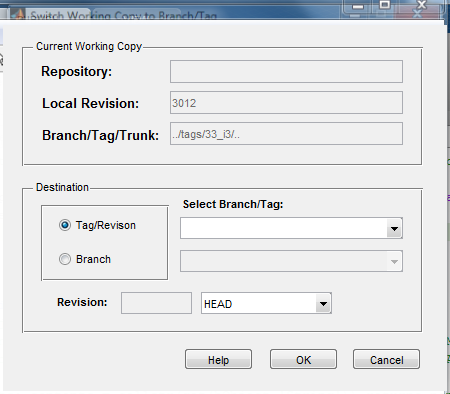

function varargout = switchSvnDialog(varargin) % SWITCHSVNDIALOG MATLAB code for switchSvnDialog.fig % SWITCHSVNDIALOG, by itself, creates a new SWITCHSVNDIALOG or raises the existing % singleton*. % % H = SWITCHSVNDIALOG returns the handle to a new SWITCHSVNDIALOG or the handle to % the existing singleton*. % % SWITCHSVNDIALOG('CALLBACK',hObject,eventData,handles,...) calls the local % function named CALLBACK in SWITCHSVNDIALOG.M with the given input arguments. % % SWITCHSVNDIALOG('Property','Value',...) creates a new SWITCHSVNDIALOG or raises the % existing singleton*. Starting from the left, property value pairs are % applied to the GUI before switchSvnDialog_OpeningFcn gets called. An % unrecognized property name or invalid value makes property application % stop. All inputs are passed to switchSvnDialog_OpeningFcn via varargin. % % *See GUI Options on GUIDE's Tools menu. Choose "GUI allows only one % instance to run (singleton)". % % See also: GUIDE, GUIDATA, GUIHANDLES % Edit the above text to modify the response to help switchSvnDialog % Last Modified by GUIDE v2.5 17-May-2015 20:45:12 % Begin initialization code - DO NOT EDIT gui_Singleton = 1; gui_State = struct('gui_Name', mfilename, ... 'gui_Singleton', gui_Singleton, ... 'gui_OpeningFcn', @switchSvnDialog_OpeningFcn, ... 'gui_OutputFcn', @switchSvnDialog_OutputFcn, ... 'gui_LayoutFcn', [] , ... 'gui_Callback', []); if nargin && ischar(varargin{1}) gui_State.gui_Callback = str2func(varargin{1}); end if nargout [varargout{1:nargout}] = gui_mainfcn(gui_State, varargin{:}); else gui_mainfcn(gui_State, varargin{:}); end % End initialization code - DO NOT EDIT % --- Executes just before switchSvnDialog is made visible. function switchSvnDialog_OpeningFcn(hObject, eventdata, handles, varargin) % This function has no output args, see OutputFcn. % hObject handle to figure % eventdata reserved - to be defined in a future version of MATLAB % handles structure with handles and user data (see GUIDATA) % varargin command line arguments to switchSvnDialog (see VARARGIN) % Choose default command line output for switchSvnDialog handles.output = hObject; % Update handles structure guidata(hObject, handles); % UIWAIT makes switchSvnDialog wait for user response (see UIRESUME) % uiwait(handles.figure1); % --- Outputs from this function are returned to the command line. function varargout = switchSvnDialog_OutputFcn(hObject, eventdata, handles) % varargout cell array for returning output args (see VARARGOUT); % hObject handle to figure % eventdata reserved - to be defined in a future version of MATLAB % handles structure with handles and user data (see GUIDATA) % Get default command line output from handles structure varargout{1} = handles.output; % --- Executes on button press in radio_tag. function radio_tag_Callback(hObject, eventdata, handles) % hObject handle to radio_tag (see GCBO) % eventdata reserved - to be defined in a future version of MATLAB % handles structure with handles and user data (see GUIDATA) % Hint: get(hObject,'Value') returns toggle state of radio_tag % --- Executes on button press in radio_branch. function radio_branch_Callback(hObject, eventdata, handles) % hObject handle to radio_branch (see GCBO) % eventdata reserved - to be defined in a future version of MATLAB % handles structure with handles and user data (see GUIDATA) % Hint: get(hObject,'Value') returns toggle state of radio_branch function edit_localFolder_Callback(hObject, eventdata, handles) % hObject handle to edit_localFolder (see GCBO) % eventdata reserved - to be defined in a future version of MATLAB % handles structure with handles and user data (see GUIDATA) % Hints: get(hObject,'String') returns contents of edit_localFolder as text % str2double(get(hObject,'String')) returns contents of edit_localFolder as a double % --- Executes during object creation, after setting all properties. function edit_localFolder_CreateFcn(hObject, eventdata, handles) % hObject handle to edit_localFolder (see GCBO) % eventdata reserved - to be defined in a future version of MATLAB % handles empty - handles not created until after all CreateFcns called % Hint: edit controls usually have a white background on Windows. % See ISPC and COMPUTER. if ispc && isequal(get(hObject,'BackgroundColor'), get(0,'defaultUicontrolBackgroundColor')) set(hObject,'BackgroundColor','white'); end function edit3_Callback(hObject, eventdata, handles) % hObject handle to edit_localRevision (see GCBO) % eventdata reserved - to be defined in a future version of MATLAB % handles structure with handles and user data (see GUIDATA) % Hints: get(hObject,'String') returns contents of edit_localRevision as text % str2double(get(hObject,'String')) returns contents of edit_localRevision as a double % --- Executes during object creation, after setting all properties. function edit3_CreateFcn(hObject, eventdata, handles) % hObject handle to edit_localRevision (see GCBO) % eventdata reserved - to be defined in a future version of MATLAB % handles empty - handles not created until after all CreateFcns called % Hint: edit controls usually have a white background on Windows. % See ISPC and COMPUTER. if ispc && isequal(get(hObject,'BackgroundColor'), get(0,'defaultUicontrolBackgroundColor')) set(hObject,'BackgroundColor','white'); end function edit_repoUrl_Callback(hObject, eventdata, handles) % hObject handle to edit_repoUrl (see GCBO) % eventdata reserved - to be defined in a future version of MATLAB % handles structure with handles and user data (see GUIDATA) % Hints: get(hObject,'String') returns contents of edit_repoUrl as text % str2double(get(hObject,'String')) returns contents of edit_repoUrl as a double % --- Executes during object creation, after setting all properties. function edit_repoUrl_CreateFcn(hObject, eventdata, handles) % hObject handle to edit_repoUrl (see GCBO) % eventdata reserved - to be defined in a future version of MATLAB % handles empty - handles not created until after all CreateFcns called % Hint: edit controls usually have a white background on Windows. % See ISPC and COMPUTER. if ispc && isequal(get(hObject,'BackgroundColor'), get(0,'defaultUicontrolBackgroundColor')) set(hObject,'BackgroundColor','white'); end % --- Executes on button press in btn_ok. function btn_ok_Callback(hObject, eventdata, handles) % hObject handle to btn_ok (see GCBO) % eventdata reserved - to be defined in a future version of MATLAB % handles structure with handles and user data (see GUIDATA) % --- Executes on button press in btn_cancel. function btn_cancel_Callback(hObject, eventdata, handles) % hObject handle to btn_cancel (see GCBO) % eventdata reserved - to be defined in a future version of MATLAB % handles structure with handles and user data (see GUIDATA) % --- Executes on button press in btn_help. function btn_help_Callback(hObject, eventdata, handles) % hObject handle to btn_help (see GCBO) % eventdata reserved - to be defined in a future version of MATLAB % handles structure with handles and user data (see GUIDATA) % --- Executes on selection change in popup_tag. function popup_tag_Callback(hObject, eventdata, handles) % hObject handle to popup_tag (see GCBO) % eventdata reserved - to be defined in a future version of MATLAB % handles structure with handles and user data (see GUIDATA) % Hints: contents = cellstr(get(hObject,'String')) returns popup_tag contents as cell array % contents{get(hObject,'Value')} returns selected item from popup_tag % --- Executes during object creation, after setting all properties. function popup_tag_CreateFcn(hObject, eventdata, handles) % hObject handle to popup_tag (see GCBO) % eventdata reserved - to be defined in a future version of MATLAB % handles empty - handles not created until after all CreateFcns called % Hint: popupmenu controls usually have a white background on Windows. % See ISPC and COMPUTER. if ispc && isequal(get(hObject,'BackgroundColor'), get(0,'defaultUicontrolBackgroundColor')) set(hObject,'BackgroundColor','white'); end function edit_localRevision_Callback(hObject, eventdata, handles) % hObject handle to edit_localRevision (see GCBO) % eventdata reserved - to be defined in a future version of MATLAB % handles structure with handles and user data (see GUIDATA) % Hints: get(hObject,'String') returns contents of edit_localRevision as text % str2double(get(hObject,'String')) returns contents of edit_localRevision as a double % --- Executes during object creation, after setting all properties. function edit_localRevision_CreateFcn(hObject, eventdata, handles) % hObject handle to edit_localRevision (see GCBO) % eventdata reserved - to be defined in a future version of MATLAB % handles empty - handles not created until after all CreateFcns called % Hint: edit controls usually have a white background on Windows. % See ISPC and COMPUTER. if ispc && isequal(get(hObject,'BackgroundColor'), get(0,'defaultUicontrolBackgroundColor')) set(hObject,'BackgroundColor','white'); end % --- Executes on selection change in popup_revision. function popup_revision_Callback(hObject, eventdata, handles) % hObject handle to popup_revision (see GCBO) % eventdata reserved - to be defined in a future version of MATLAB % handles structure with handles and user data (see GUIDATA) % Hints: contents = cellstr(get(hObject,'String')) returns popup_revision contents as cell array % contents{get(hObject,'Value')} returns selected item from popup_revision % --- Executes during object creation, after setting all properties. function popup_revision_CreateFcn(hObject, eventdata, handles) % hObject handle to popup_revision (see GCBO) % eventdata reserved - to be defined in a future version of MATLAB % handles empty - handles not created until after all CreateFcns called % Hint: popupmenu controls usually have a white background on Windows. % See ISPC and COMPUTER. if ispc && isequal(get(hObject,'BackgroundColor'), get(0,'defaultUicontrolBackgroundColor')) set(hObject,'BackgroundColor','white'); end
Error using feval
Undefined function 'popup_branch_CreateFcn' for input arguments of type
'double'.
Error in gui_mainfcn (line 96)
feval(varargin{:});
Error in switchSvnDialog (line 42)
gui_mainfcn(gui_State, varargin{:});
Error in
@(hObject,eventdata)switchSvnDialog('popup_branch_CreateFcn',hObject,eventdata,guidata(hObject))
Error using struct2handle
Error while evaluating uicontrol CreateFcn
Error using feval
Undefined function 'edit_revision_CreateFcn' for input arguments of type
'double'.
Error in gui_mainfcn (line 96)
feval(varargin{:});
Error in switchSvnDialog (line 42)
gui_mainfcn(gui_State, varargin{:});
Error in
@(hObject,eventdata)switchSvnDialog('edit_revision_CreateFcn',hObject,eventdata,guidata(hObject))
Error using struct2handle
Error while evaluating uicontrol CreateFcn
